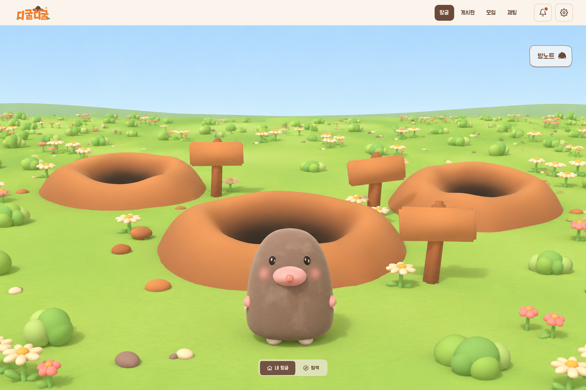

Figma "탐색하기" 화면의 땅 위 장면을 PlayCanvas 엔진(2.23.3)만으로 다시 만들었습니다. 도형은 모두 코드로 만들고(모델 파일 없음), 꽃·덤불·돌은 인스턴싱으로 한 번에 그립니다. 점토 느낌은 하늘색 환경광, 부드러운 그림자(PCSS), CameraFrame 후처리(SSAO·톤매핑·비네트)로 냈습니다.

PlayCanvas Figma구도(둔덕 3개·표지판 3개·두더지 위치), 하늘과 잔디 색, 흩뿌린 꽃과 덤불의 밀도는 코드만으로 원본에 꽤 가깝게 맞출 수 있었습니다.
두더지는 탄환형 몸, 눈·볼·코·손·발 배치까지 맞췄지만, 원본의 손으로 빚은 듯한 미세한 울퉁불퉁함과 렌더러의 간접광 번짐은 실시간으로는 흉내만 냅니다.